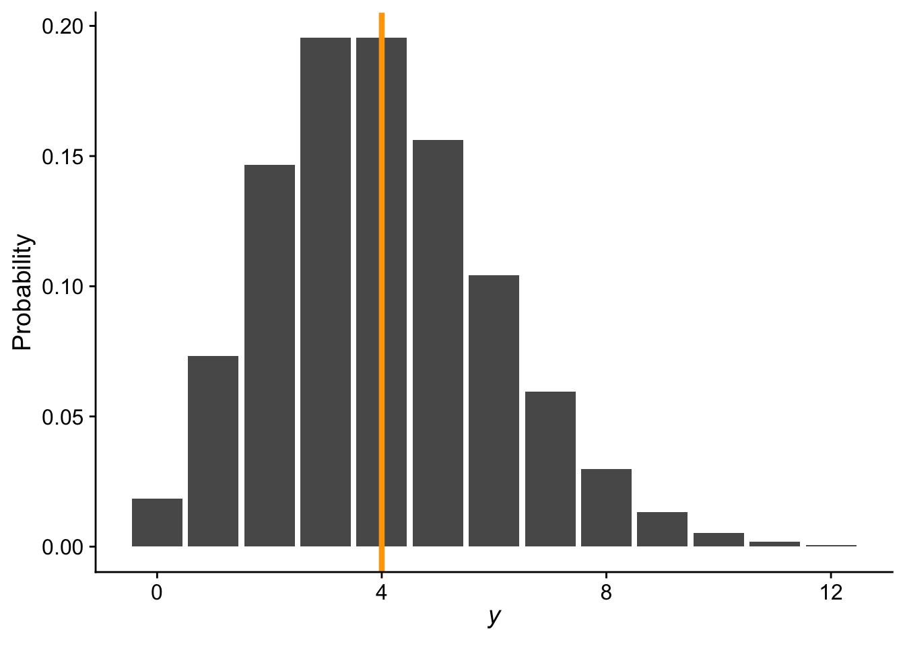
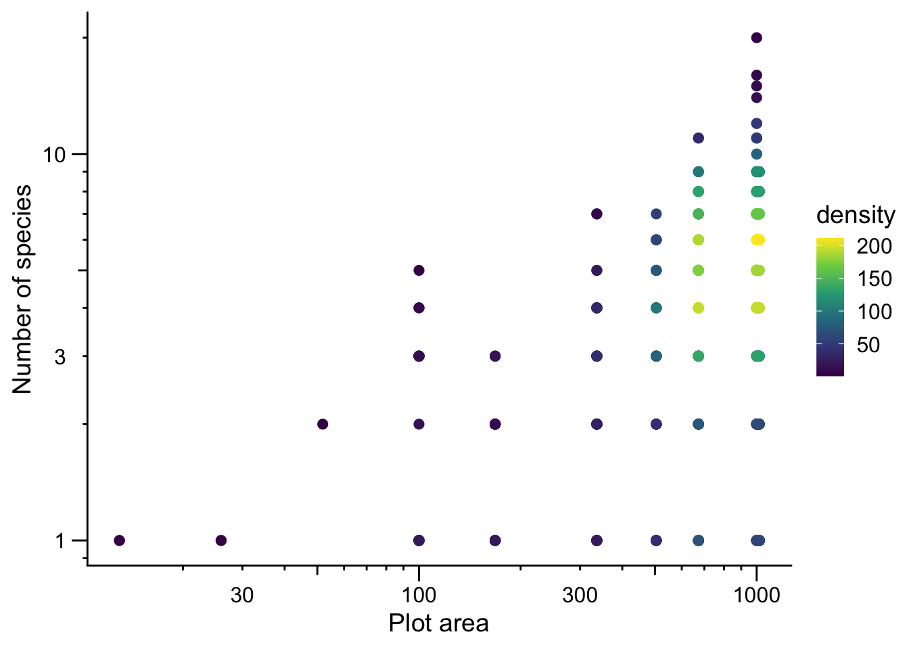
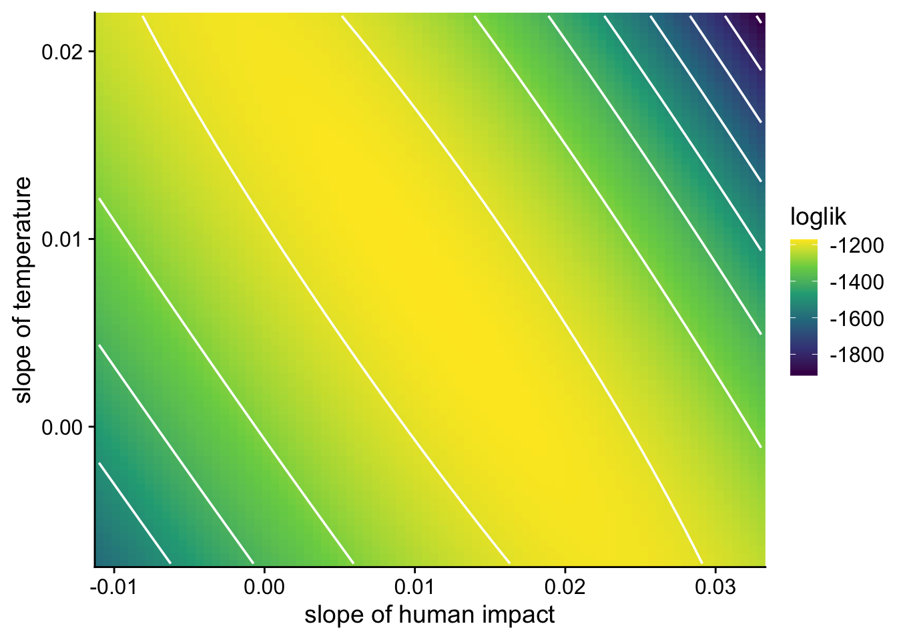

In the previous module we introduced GLMs using the binomial distribution as our example. Recall that the key insight is that different kinds of response variables call for different probability distributions. When data are binary (0/1) or represent proportions, the binomial distribution is appropriate. But what about data that are counts such as the number of trees in a plot or the number of species on an island? For these, the Poisson distribution is a natural choice.
21.1 The Poisson distribution
The Poisson distribution describes the probability of observing a non-negative, integer count. We write
\[
y \sim \text{Pois}(\lambda)
\]
The parameter \(\lambda\) represents the mean of the distribution, But with only one parameter, we do not have very much flexibility to modulate the variance of the distribution. It turns out the Poisson imposes the strong constraint that the variance is equal to the mean, are both equal to \(\lambda\) (this will be a central point in an upcoming lab).
Here is an example probability mass function for a Poisson distribution with \(\lambda = 4\)
# range of count valuesnn <-0:12ggplot(data.frame(x = nn, y =dpois(nn, 4)), aes(x, y)) +geom_bar(stat ="identity") +xlab(expression(italic(y))) +ylab("Probability") +theme_cowplot() +geom_vline(xintercept =4, color ="orange", linewidth =1.5)

Because \(\lambda\) is both the mean and variance of the distribution, and because counts can never be negative nor can a variance, a critical constraint is that \(\lambda \geq 0\). This constraint is what drives the need for a special link function in a Poisson GLM.
21.2 The log link function
In a standard linear model we write the mean response as a linear function of the explanatory variables:
\[
\lambda = b_0 + b_1 x
\]
But this is a problem for Poisson GLM: a linear combination of predictors can produce any value from \(-\infty\) to \(\infty\), yet \(\lambda\) must be non-negative. The solution is to model the log of \(\lambda\) as the linear function:
\[
\log(\lambda) = b_0 + b_1 x
\]
which is equivalent to
\[
\lambda = e^{b_0 + b_1 x}
\]
Because \(e^\text{anything} \geq 0\) always, this guarantees that \(\lambda\) will never be negative no matter what values the predictors or coefficients take. The log function is therefore the natural link function for the Poisson GLM.
21.3 The species–area relationship
You’ll recall that in our R refresher we used the classic species area relationship (SAR) as an example for making data visualizations. To make a model of the SAR, a Poisson GLM might be an appropriate choice, after all number of species (the response variable in the SAR) is a count. One classic form for the (SAR) is expressed as
where \(S\) is the number of species, \(A\) is area, \(c\) is a constant, and \(z\) is the scaling exponent. Log-transforming both sides of the SAR reveals a linear equation…this should perhaps be sounding like a log link function situation. Indeed, if we recognize that we are modeling \(\bar{S}\), the average species richness, then we make these substitutions in the log link funciton equation
\[
\begin{aligned}
\bar{S} &= \lambda \\
\log(A) &= x \\
b_0 &= \log(c) \\
b_1 &= z
\end{aligned}
\]
and we arrive at a log link function for \(\bar{S}\):
\[
\log(\bar{S}) = b_0 + b_1 \log(A)
\]
Let’s visualize the data (note: we are excluding the two very large survey plots because they are extreme outliers on the x-axis)

On the log–log scale we see a roughly linear relationship, consistent with the SAR and log link assumptions of Poisson GLM.
21.4 Fitting a Poisson GLM in R
Fitting a Poisson GLM in R again uses the glm function, just as with the binomial GLM. The key difference is specifying family = poisson:
# note: i've done some data wrangling alread to make the# object `dat_plt`head(dat_plt)
# here is the modelsar <-glm(nspp ~log(Plot_Area),data = dat_plt,family = poisson)
Note that we only need to log-transform the explanatory variable (Plot_Area). The log link function automatically handles the log-transformation of the mean of the response. We do not need to log-transform nspp. We can inspect the coefficients as usual:
coefficients(sar)
(Intercept) log(Plot_Area)
-1.8086075 0.4893528
We can plug these into the SAR equation:
\[
S = e^{-1.809} A^{0.489}
\]
21.5 Adding more explanatory variables
Area is a natural starting point for modeling species richness, but we are likely interested in additional predictors. In fact, area might even be a nuisance variable—one we need to account for statistically, but that is not our main scientific interest. We might be more interested in, say, human impact (hii) or temperature (avg_temp_annual_c).
Adding more predictors to a Poisson GLM is no different from adding them to a linear model—just extend the formula:
mod <-glm(nspp ~log(Plot_Area) + hii + avg_temp_annual_c,data = dat_plt,family = poisson)coefficients(mod)
(Intercept) log(Plot_Area) hii avg_temp_annual_c
-2.320992411 0.516567381 0.011011301 0.007295895
After accounting for plot area, species richness appears to increase (weakly) with both human impact index and mean annual temperature. Given our conservation concern about human impact, this might not make sense at first. However, there is at least some scientific thought that non-native plants augment species richness (Sax & Gaines 2003) and thus heavily impacted sites have many introduced species that add to the total count. However, the other part of the story is temperature—hotter areas have more species. This could be because lowland areas are hotter and also more likely to be impacted by humans. But it is also worth noting that, historically, hot and dry lowland forests were once incredibly diverse with unique endemic species (Rock 1913) that are indeed now being lost by human impact. It is also worth taking a moment to contemplate the Rock (1913) publication. Rock was a botanist paid by the American government to survey plants in Hawaiʻi. 1913 is only 30 years after the 1893 illegal overthrow of the Hawaiian Kingdom. While Rock (1913) provides a convenient citation, his work also represents science as colonialism and colonialism as science.
21.6 Collinearity
At a much more trivial level—in terms of ethics and biology—adding more explanatory variables requires care. When two or more predictors are correlated with each other, we run into collinearity, and that causes problems for estimation.
To see why, we can visualize the likelihood surface for the slopes of human impact and temperature from the model above:

Instead of a well-defined peak, the likelihood surface has a long, flat ridge, meaning many—infinite—combinations of the two slope coefficients have nearly the same likelihood. That makes it difficult and unreliable to identify the unique best-fitting parameter values.
When we visualize human impact and temperature we see they are indeed correlated with each other:
The practical takeaway: before including multiple predictors in a model, check for pairwise correlations among them. A commonly used guideline is to only include predictors with pairwise correlation coefficients \(-0.6 < r < 0.6\). You can compute correlations with cor() in R:
cor(dat_plt$hii, dat_plt$avg_temp_annual_c, use ="complete.obs")
[1] 0.6397327
If two predictors are too highly correlated, you will typically need to choose one or the other, or find a way to combine them, such as through principal component analysis or other dimension reduction techniques, rather than including both in the same model.
21.7 Slides
21.8 References
Rock JF. 1913. The indigenous trees of the hawaiian islands. Patronage, Honoulu: Hawaii.
Sax DF, Gaines SD. 2003. Species diversity: From global decreases to local increases. Trends in Ecology & Evolution 18:561–566. Elsevier.